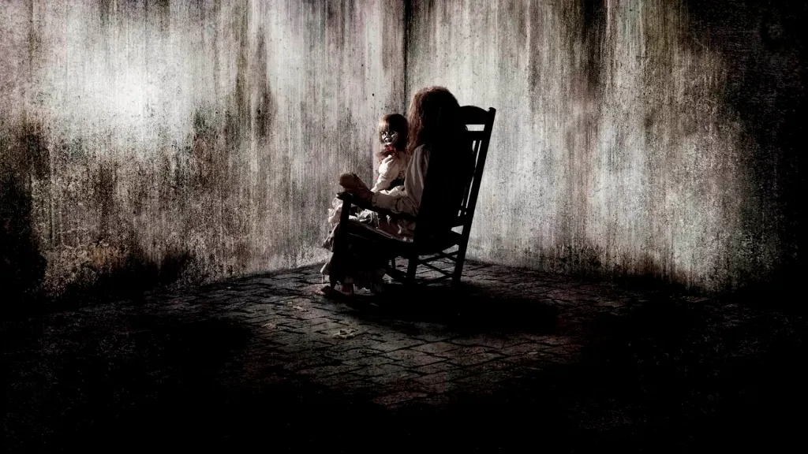
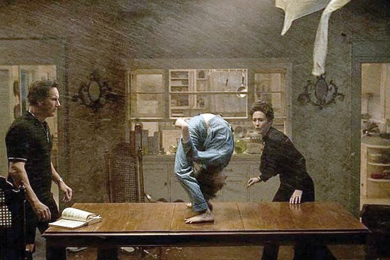
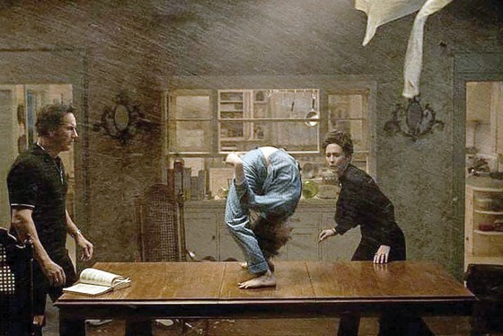

| Pelicula | EL CONJURO |
|---|---|
| Director | James Wan |
| Descripción |
Películas estadounidenses con sagas de terror paranormal basada en los casos de los investigadores
de lo paranormal "2013" dirigida por James Wan y protagonizada por Vera Farmiga y Patrick Wilson en el papel de los parapsicólogos Lorraine y Ed Warren. |
| Cronología |
El conjuro (2013) El conjuro 2 (2016) El conjuto "El Diablo Me Obligó a Hacerlo" (1981) |
| Imagen |

 

|